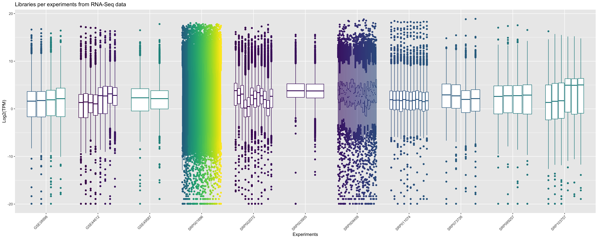
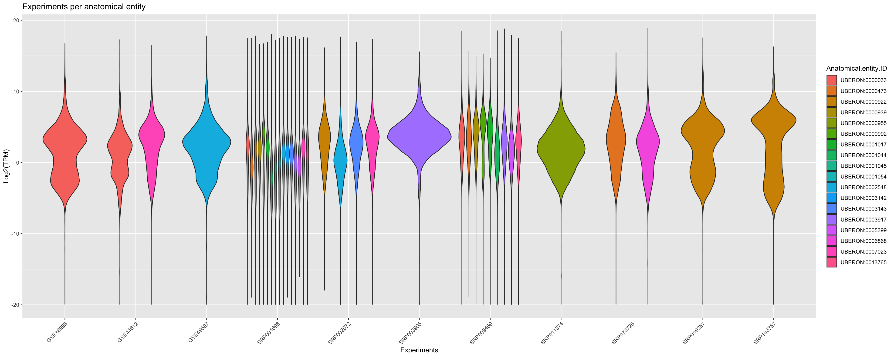
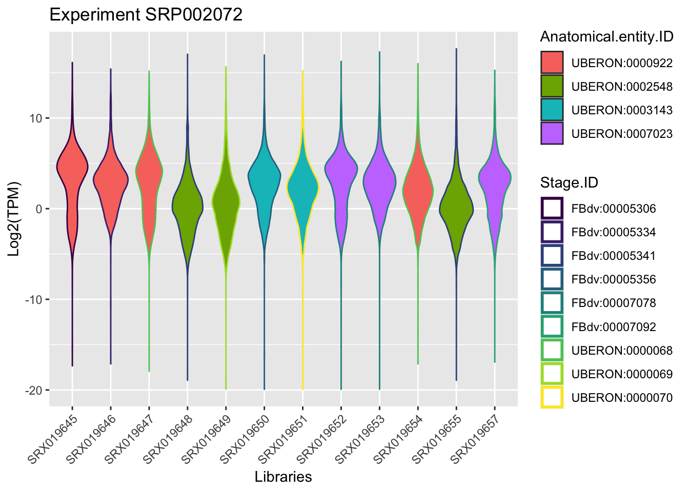
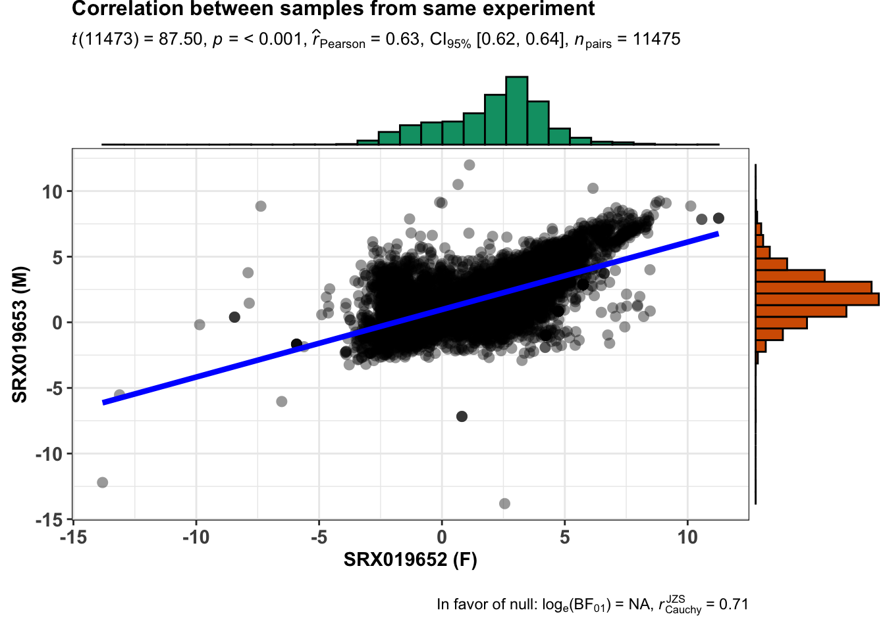
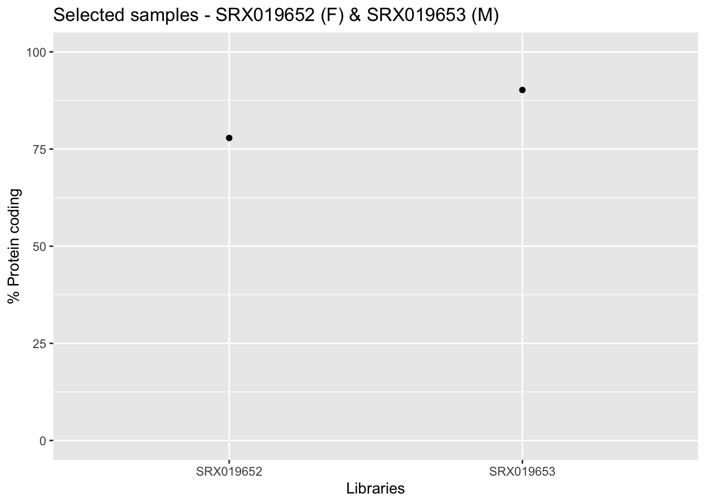
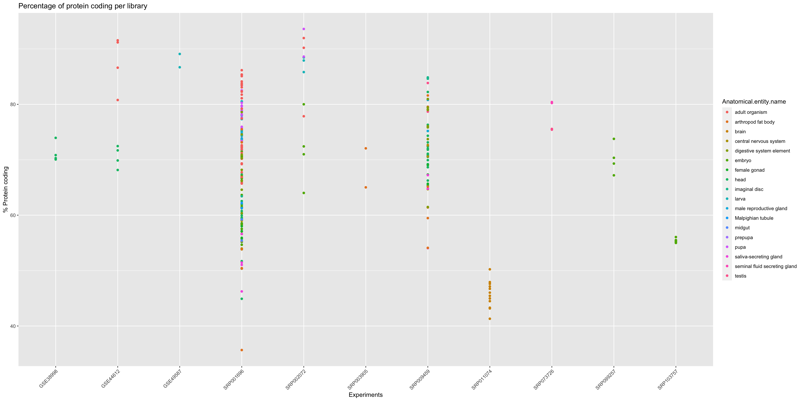

Last updated: 2020-04-20
Checks: 6 1
Knit directory: Bgee/
This reproducible R Markdown analysis was created with workflowr (version 1.6.1). The Checks tab describes the reproducibility checks that were applied when the results were created. The Past versions tab lists the development history.
Great! Since the R Markdown file has been committed to the Git repository, you know the exact version of the code that produced these results.
Great job! The global environment was empty. Objects defined in the global environment can affect the analysis in your R Markdown file in unknown ways. For reproduciblity it’s best to always run the code in an empty environment.
The command set.seed(20200417) was run prior to running the code in the R Markdown file. Setting a seed ensures that any results that rely on randomness, e.g. subsampling or permutations, are reproducible.
Great job! Recording the operating system, R version, and package versions is critical for reproducibility.
To ensure reproducibility of the results, delete the cache directory processdata_cache and re-run the analysis. To have workflowr automatically delete the cache directory prior to building the file, set delete_cache = TRUE when running wflow_build() or wflow_publish().
Great job! Using relative paths to the files within your workflowr project makes it easier to run your code on other machines.
Great! You are using Git for version control. Tracking code development and connecting the code version to the results is critical for reproducibility.
The results in this page were generated with repository version 9073f83. See the Past versions tab to see a history of the changes made to the R Markdown and HTML files.
Note that you need to be careful to ensure that all relevant files for the analysis have been committed to Git prior to generating the results (you can use wflow_publish or wflow_git_commit). workflowr only checks the R Markdown file, but you know if there are other scripts or data files that it depends on. Below is the status of the Git repository when the results were generated:
Ignored files:
Ignored: .Rhistory
Ignored: analysis/downloaddata_cache/
Ignored: analysis/extractinfo_cache/
Ignored: analysis/processdata_cache/
Untracked files:
Untracked: Bos_taurus_Bgee_14_1/
Untracked: Drosophila_melanogaster_Bgee_14_1/
Untracked: README.html
Untracked: release.tsv
Untracked: species_Bgee_14_1.tsv
Unstaged changes:
Modified: README.md
Modified: analysis/_site.yml
Deleted: analysis/about.Rmd
Modified: analysis/index.Rmd
Deleted: analysis/license.Rmd
Note that any generated files, e.g. HTML, png, CSS, etc., are not included in this status report because it is ok for generated content to have uncommitted changes.
These are the previous versions of the repository in which changes were made to the R Markdown (analysis/processdata.Rmd) and HTML (docs/processdata.html) files. If you’ve configured a remote Git repository (see ?wflow_git_remote), click on the hyperlinks in the table below to view the files as they were in that past version.
| File | Version | Author | Date | Message |
|---|---|---|---|---|
| Rmd | 9073f83 | SFonsecaCosta | 2020-04-20 | add analysis |
library(BgeeDB)
library(ggplot2)
library(ggstatsplot)When you collect data from Bgee database you can explore the data in multiple different ways to extract knowledge for your research.
For this part of the course (processing data) we will continue with Drosophila melanogaster data. We will plot a global overview of the all RNA-Seq data available for this species and then we go more narrow until the comparison between 2 samples that just differ by sex.
When we download/collect all data for a particular data type from Bgee you are working with processed data.
From this processed data you can have an overview for each sample, referent to each experiment, of the distribution of relative expression values. In the graphic bellow we plot the boxplot for all libraries that are present in Bgee for RNA-Seq data in Drosophila melanogaster.
principalInfo <- c()
for (i in dataBgee_DM) {
collect <- i[c(1,2,4,5,7,9, 10,12)]
principalInfo <- rbind(principalInfo, collect)
}
ggplot(principalInfo, aes(x = Experiment.ID, y = log2(TPM))) +
geom_boxplot(aes(color = Library.ID), show.legend = FALSE) + xlab("Experiments") + ylab("Log2(TPM)") +
ggtitle("Libraries per experiments from RNA-Seq data")+
scale_color_viridis_d() +
theme(axis.text.x = element_text(angle = 45, hjust = 1))
In order to agroup the data you can verify the relative expression by plotting that per correspondent anatomical entities. Note that a violin_plot can represent multiple samples if the libraries belongs to same anatomical entity.
ggplot(principalInfo, aes(x = Experiment.ID, y = log2(TPM), fill = Anatomical.entity.ID)) +
geom_violin() + xlab("Experiments") + ylab("Log2(TPM)") +
ggtitle("Experiments per anatomical entity")+
scale_color_viridis_d() +
theme(axis.text.x = element_text(angle = 45, hjust = 1))+ guides(colour = guide_legend(override.aes = list(size=1)))
Using as an example, in the course we will focus in the experiment retrieved in the section Extract Information, this means the experimentId SRP002072.
By plotting the data (just to visualize) you should be able to found the samples that belongs to the same anatomical entity and developmental stage for this experiment.
experiment_SRP002072 <- dplyr::filter(principalInfo, Experiment.ID == "SRP002072")
## remove useless columns in this case Experiment.ID = SRP002072 and Strain = NA
experiment_SRP002072[1] <- NULL
experiment_SRP002072[6] <- NULL
ggplot(experiment_SRP002072, aes(x = Library.ID, y = log2(TPM))) +
geom_violin(aes(fill = Anatomical.entity.ID, col = Stage.ID)) + xlab("Libraries") + ylab("Log2(TPM)") +
ggtitle("Experiment SRP002072")+
scale_color_viridis_d() +
theme(axis.text.x = element_text(angle = 45, hjust = 1))+ guides(colour = guide_legend(override.aes = list(size=1)))
From the plot above we can rescue samples from the same anatomic entity and same developmental stage. Now we will search which samples from this experiment differ by sex.
sexInfo <- c("male", "female")
libInfo <- dplyr::filter(experiment_SRP002072, Sex %in% sexInfo)
unique(libInfo$Library.ID)[1] "SRX019652" "SRX019653"From our analysis we know that the samples retrieved as unique have the same anatomical entity and same developmental stage but they differ in sex. Just verify how they correlate in overall (relative expression - TPM).
## extract just fundamental columns to make a reformated data.frame
libInfo <- libInfo[c(1,2,6)]
## reformat the data
reshapeTable <- reshape(libInfo, direction='wide',idvar='Library.ID', timevar='Gene.ID')
reshapeTable <- t(reshapeTable)[-c(1),]
finalTable <- data.frame(as.numeric(reshapeTable[,1]), as.numeric(reshapeTable[,2]))
colnames(finalTable) <- c("SRX019652", "SRX019653")
finalTable <- log(finalTable)
finalTable <- as.matrix(finalTable)
finalTable <- finalTable[!rowSums(!is.finite(finalTable)),]
finalTable <- as.data.frame(finalTable)
ggstatsplot::ggscatterstats(
data = finalTable,
x = SRX019652,
y = SRX019653,
xlab = "SRX019652 (F)",
ylab = "SRX019653 (M)",
title = "Correlation between samples from same experiment",
messages = FALSE
)
Now from the output provided by the getAnnotation() function you can verify the amount of protein coding genes present, as well as other informations, for each sample.
samplesId <- c(unique(libInfo$Library.ID))
infoLib <- dplyr::filter(annotation_DrosMelRNASeq$sample.annotation, Library.ID %in% samplesId)
ggplot(infoLib, aes(x = Library.ID, y = Protein.coding.genes.percent.present)) +
geom_point() + ylim(0, 100) + xlab("Libraries") + ylab("% Protein coding") +
ggtitle("Selected samples - SRX019652 (F) & SRX019653 (M)")
In the graphic above we just plot the 2 samples from our narrow analysis.
In order to get an overview of the % of protein coding genes for all samples from Drosophila melanogaster we should make a general plot.
ggplot(annotation_DrosMelRNASeq$sample.annotation, aes(x = Experiment.ID, y = Protein.coding.genes.percent.present)) +
geom_point(aes(color = Anatomical.entity.name ), show.legend = TRUE) + xlab("Experiments") + ylab("% Protein coding") +
ggtitle("Percentage of protein coding per library")+
theme(axis.text.x = element_text(angle = 45, hjust = 1))
sessionInfo()R version 3.6.0 (2019-04-26)
Platform: x86_64-apple-darwin15.6.0 (64-bit)
Running under: macOS High Sierra 10.13.4
Matrix products: default
BLAS: /Library/Frameworks/R.framework/Versions/3.6/Resources/lib/libRblas.0.dylib
LAPACK: /Library/Frameworks/R.framework/Versions/3.6/Resources/lib/libRlapack.dylib
locale:
[1] en_US.UTF-8/en_US.UTF-8/en_US.UTF-8/C/en_US.UTF-8/en_US.UTF-8
attached base packages:
[1] stats4 parallel stats graphics grDevices utils datasets
[8] methods base
other attached packages:
[1] ggstatsplot_0.4.0 ggplot2_3.3.0 BgeeDB_2.12.1
[4] tidyr_1.0.2 topGO_2.38.1 SparseM_1.78
[7] GO.db_3.10.0 AnnotationDbi_1.48.0 IRanges_2.20.2
[10] S4Vectors_0.24.4 Biobase_2.46.0 graph_1.64.0
[13] BiocGenerics_0.32.0 workflowr_1.6.1
loaded via a namespace (and not attached):
[1] tidyselect_1.0.0 lme4_1.1-23
[3] RSQLite_2.2.0 grid_3.6.0
[5] munsell_0.5.0 codetools_0.2-16
[7] effectsize_0.3.0 statmod_1.4.34
[9] miniUI_0.1.1.1 withr_2.1.2
[11] Brobdingnag_1.2-6 metaBMA_0.6.2
[13] colorspace_1.4-1 knitr_1.28
[15] rstudioapi_0.11 DescTools_0.99.34
[17] ipmisc_2.0.0 rcompanion_2.3.25
[19] ggsignif_0.6.0 labeling_0.3
[21] emmeans_1.4.5 git2r_0.26.1
[23] rstan_2.19.3 repr_1.1.0
[25] bbmle_1.0.23.1 farver_2.0.3
[27] bit64_0.9-7 bridgesampling_1.0-0
[29] rprojroot_1.3-2 coda_0.19-3
[31] vctrs_0.2.4 generics_0.0.2
[33] TH.data_1.0-10 metafor_2.4-0
[35] tidyBF_0.2.0 xfun_0.13
[37] R6_2.4.1 BayesFactor_0.9.12-4.2
[39] palr_0.2.0 pals_1.6
[41] bitops_1.0-6 reshape_0.8.8
[43] logspline_2.1.15 assertthat_0.2.1
[45] promises_1.1.0 scales_1.1.0
[47] multcomp_1.4-13 ggExtra_0.9
[49] gtable_0.3.0 multcompView_0.1-8
[51] processx_3.4.2 sandwich_2.5-1
[53] rlang_0.4.5 MatrixModels_0.4-1
[55] EMT_1.1 zeallot_0.1.0
[57] splines_3.6.0 TMB_1.7.16
[59] dichromat_2.0-0 broom_0.5.5
[61] scico_1.1.0 inline_0.3.15
[63] abind_1.4-5 yaml_2.2.1
[65] reshape2_1.4.4 modelr_0.1.6
[67] backports_1.1.6 httpuv_1.5.2
[69] tools_3.6.0 ellipsis_0.3.0
[71] WRS2_1.0-0 ez_4.4-0
[73] Rcpp_1.0.4.6 plyr_1.8.6
[75] base64enc_0.1-3 jmvcore_1.2.5
[77] purrr_0.3.3 RCurl_1.98-1.1
[79] ps_1.3.2 prettyunits_1.1.1
[81] pbapply_1.4-2 cowplot_1.0.0
[83] correlation_0.2.0 zoo_1.8-7
[85] LaplacesDemon_16.1.4 haven_2.2.0
[87] ggrepel_0.8.2 cluster_2.1.0
[89] fs_1.4.1 magrittr_1.5
[91] data.table_1.12.8 openxlsx_4.1.4
[93] lmtest_0.9-37 mvtnorm_1.1-0
[95] broomExtra_3.0.0 whisker_0.4
[97] sjmisc_2.8.4 matrixStats_0.56.0
[99] hms_0.5.3 mime_0.9
[101] evaluate_0.14 xtable_1.8-4
[103] rio_0.5.16 sjstats_0.17.9
[105] pairwiseComparisons_0.3.0 readxl_1.3.1
[107] broom.mixed_0.2.4 gridExtra_2.3
[109] rstantools_2.0.0 bdsmatrix_1.3-4
[111] compiler_3.6.0 tibble_3.0.0
[113] maps_3.3.0 crayon_1.3.4
[115] minqa_1.2.4 StanHeaders_2.21.0-1
[117] htmltools_0.4.0 mgcv_1.8-31
[119] mc2d_0.1-18 later_1.0.0
[121] jcolors_0.0.4 libcoin_1.0-5
[123] expm_0.999-4 DBI_1.1.0
[125] sjlabelled_1.1.3 jmv_1.2.5
[127] MASS_7.3-51.5 boot_1.3-24
[129] Matrix_1.2-18 car_3.0-7
[131] cli_2.0.2 insight_0.8.2
[133] metaplus_0.7-11 forcats_0.5.0
[135] pkgconfig_2.0.3 statsExpressions_0.4.0
[137] coin_1.3-1 numDeriv_2016.8-1.1
[139] foreign_0.8-76 skimr_2.1.1
[141] oompaBase_3.2.9 paletteer_1.1.0
[143] ggcorrplot_0.1.3 estimability_1.3
[145] stringr_1.4.0 callr_3.4.3
[147] digest_0.6.25 parameters_0.6.1
[149] fastGHQuad_1.0 cellranger_1.1.0
[151] rmarkdown_2.1 nortest_1.0-4
[153] curl_4.3 modeltools_0.2-23
[155] shiny_1.4.0.2 gtools_3.8.2
[157] rjson_0.2.20 nloptr_1.2.2.1
[159] lifecycle_0.2.0 nlme_3.1-147
[161] jsonlite_1.6.1 carData_3.0-3
[163] groupedstats_0.2.2 mapproj_1.2.7
[165] viridisLite_0.3.0 fansi_0.4.1
[167] pillar_1.4.3 lattice_0.20-41
[169] loo_2.2.0 fastmap_1.0.1
[171] pkgbuild_1.0.6 survival_3.1-12
[173] glue_1.4.0 zip_2.0.4
[175] bayestestR_0.5.3 bit_1.1-15.2
[177] stringi_1.4.6 performance_0.4.5
[179] rematch2_2.1.1 blob_1.2.1
[181] memoise_1.1.0 dplyr_0.8.5